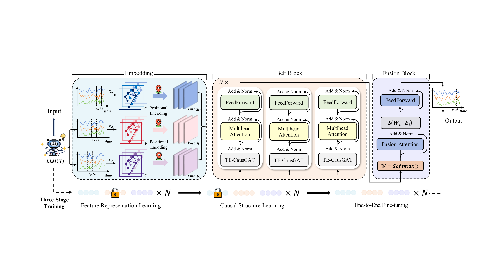

教育背景
专业课程
竞赛奖项 ：全国大学生统计建模大赛省级（北京市）一等奖、WorldQuant 量化投资大赛金牌、美国大学生数学建模竞赛（MCM/ICM）H 奖
其他奖项 ：校级竞赛类奖学金、思源宣讲团宣讲比赛院级一等奖、军训板报比赛校级二等奖
实习经历
重点项目：国家管网共享运营财务数据治理；NL2Dashboard；多 Agent 标书生成 PoC
参与已中标的国家管网财务数据治理及产品化建设项目的治理方案设计与投标准备。将分散系统中的表、字段、编码与核算定义抽象为共享业务对象、属性与关系，参与“业务域—活动大类—活动项”业务活动模型设计，并通过统一的客户、产品、订单与合同编码串联业务、财务、物流与主数据记录，为数据分析与自然语言查询建立一致且可追溯的数据基础。
主导 NL2Dashboard 的研究、开发与评估。语言模型在受治理的 YAML 指标目录下将业务问题转化为结构化需求，另一模型复核指标与时间选择；确定性服务随后注入用户权限、编译参数化 SQL、计算数值结果并渲染 React/ECharts 看板，防止模型直接产出可执行 SQL 或最终页面。系统采用 Python/FastAPI、MySQL/DuckDB、PostgreSQL/Redis 与 React/TypeScript 构建，支持行级、列级与对象级访问控制、自然语言编辑与版本回滚；在真实使用暴露问题后审计并重建生成链路，最终在人工编写的留出集上取得需求解析、语义映射、查询编译、数值结果与看板生成 97.67%–100% 的准确率，严重高风险错误为零。
独立编制共享运营单据积压监控指标与风险分析方法，以 SQL 实现存量、时效与流量测度；设计分级处置规则；依据 7/14 日加权到达/清理速率估算净消化能力；并应用 Little’s Law 校验积压、吞吐与滞留时长三者的一致性。另设计费用/预算异常检测的可解释机器学习工作流：以单条记录为样本、历史审计结论为候选标签，构造金额偏差、预算进度、提交集中度与主体风险特征；以 CART 为基线、随机森林与 XGBoost/LightGBM 为候选模型；并明确 SHAP、PR-AUC、Top-K 精确率/召回率与时间外验证方法。
独立设计并验证八阶段多 Agent 标书生成 PoC，将招标文件拆解为可审计单元与自动化的情报解析、内容生成、确定性质检、编译成册与交付环节。通过事实占位、跨章节摘要、废标条款扫描、图示检查与人工审批减少无依据表述与跨章节不一致，产出 29 个可审计生成单元；并撰写产品 PRD，覆盖系统架构、Agent 职责、功能需求与成功指标。
实习概述：参与 OECD 支柱二全球最低税合规项目，服务中粮集团、太平洋保险、中国信达、长城汽车等多家大型企业客户，独立承担实体股权架构分析、基础信息表编制、公司名称翻译及财务数据汇总等数据全流程工作
工具开发：主导中粮集团 1,258 家实体的股权结构数据清洗，面对大量公司名称前后不一致导致 Excel 公式无法自动匹配的问题，自主开发 Python 模糊匹配程序，基于字符串相似度算法实现实体名称自动比对与分级归类，生成匹配报告交付团队与客户确认。基于上述数据处理痛点，进一步开发通用型 Excel 标准化工具（支持大小写统一、空格规范化、CJK 字符清洗），两种工具均以 Flask 构建 Web 界面并开源至 GitHub，形成可复用的工具化解决方案 NameLink Excel-Standardizer
股权穿透：负责太平洋保险集团近 200 家实际控制企业的股权穿透分析，综合运用启信宝、天眼查等企业信息平台进行交叉验证，梳理多层嵌套股权架构，输出并表所需的标准化股权结构信息
授信分析：参与企业授信报告编写与财务尽调工作，运用企查查等平台采集目标企业工商信息、股权结构等数据；深入分析客户财务报表，运用 Excel 构建信用评分模型，结合多种图表分析方法，从偿债能力（流动比率、速动比率）等多维度量化评估企业信用风险，为信贷审批决策提供数据支撑。
业务管理：协助完成对公业务全流程管理，整理汇总外汇业务等 12 类高频业务咨询记录，建立标准化知识体系；参与企业银行账户开户流程，协助审核企业营业执照等开户资料，熟悉外汇业务登记、询证函办理等业务流程。
毛利对标：参与某项目的跨单位毛利率对标分析，运用 Excel 处理所属施工单位在系统内外主要市场的经营数据；通过横纵向对比分析近年毛利率变化趋势，识别各单位市场竞争优势，为项目投标策略优化提供数据支撑。
风控建模：协助搭建两套财务风控模型并完善可视化分析工作：①合同资产质量评价模型：抽取 190 余个项目的新增合同资产样本，从收入结算及时性得分、超合同额确认风险得分、项目完工状态得分三大维度构建加权综合评分体系；运用 Excel 进行数据清洗并计算新增合同资产质量综合得分，精准识别 35 个超合同额项目风险敞口；②市场质量分析模型：整合 21 个细分市场共 4,000 余个项目数据，从项目毛利率等关键指标进行多维量化分析；建立横向单位间对标、纵向 5 年趋势分析的双向评价机制，成功识别高风险市场领域，为优化新签合同布局提供决策依据。
论文发表

问题切入：现有时空 GNN 依赖对称邻接矩阵，无法区分"谁影响谁"，交通事故沿 A→B→C 单向传播拥堵，对称图却错误赋予 C→A 权重；且已有图学习方法缺乏机制验证学到的边权是否具有预测意义而非虚假相关。
方法设计：提出 Orion 框架，核心 TE-CausGAT 模块基于 Granger 因果原理分段估计时变有向依赖矩阵，通过贝叶斯融合整合学习结构与先验邻接；首创预测一致性自验证——对节点 i 执行 mask 干预后测量节点 j 预测变化 Δŷj，要求其与边权 Cij 一致，训练中自动过滤未通过干预测试的虚假边。架构上 Belt Block 并行建模小时/日/周三尺度，三阶段渐进训练避免联合优化的局部最优。
实验结果：5 个基准上取得 SOTA：METR-LA MAE 降低 6.60%，PEMS-08 降低 8.65%，流行病数据 CA/TX 分别降低 22.70% 和 37.73%。DREAM-3 基因调控网络有向图发现 AUC 达 0.6295，超越最强基线 CUTS 6.42%，验证所学结构与 ground-truth 因果关系的一致性
投稿状态：Orion 当前处于 ICLR 2027 投稿阶段；公开仓库保留该研究的既有脉络，投稿版本细节以会议流程允许公开的内容为准。
科研经历
课题组方向与文献研读：课题组聚焦能源市场预测（煤炭、碳交易、风电、电力负荷）与金融时间序列预测两条主线，融合因果推断、大语言模型（LLM）、Transformer / LSTM 时序架构与多因子交易策略等前沿方法。系统精读领域顶会/顶刊最新工作，围绕时空建模、可解释 AI 与量化策略创新方向形成持续技术跟踪。
国家自然科学基金项目参与：作为团队成员参与导师主持的能源预测方向国自然项目，承担时空神经网络通用建模方向研究工作；完成一作论文提出 Orion 时空预测模型，当前处于 ICLR 2027 投稿阶段，其中 TE-CausGAT 时变有向因果图框架在交通与流行病预测之外，为能源时空预测提供了可迁移的方法学基础。
项目经历
问题建模：面向医院门诊"按号叫诊"场景，将医生服务过程抽象为单调推进的离散事件模拟：服务时间段 t 自 1 起逐段递增，每段依"当前号槽患者正在等待 → 80 岁以上老人优先 → 等待者中预约号最小者"的三级优先级确定接诊对象。针对题面中"到达时刻"与"预约号"两个语义相近的时间字段，通过比对输入输出样例反推其含义与行列对应，厘清规则边界。
数据结构与算法：利用"n 位患者的预约号恰构成 1…n 排列"这一性质，直接以预约号为数组下标组织到达时刻、ID、年龄等并行数组，实现 O(1) 定位、免去显式排序；患者 ID 以字符数组存储并原样读写，规避整型化导致的前导零丢失。主循环以"已就诊人数达到 n"为终止条件而非将 t 限定于 [1, n]，正确处理就诊时段越过 n 与空号跳过的情形，三级优先级则由条件分支的先后次序自然实现。
工程迭代与成果：初版因将时间段硬编码为 [1, n] 而遗漏患者、又因整型存储 ID 丢失前导零，仅得 4 分；经定位后改为计数终止与字符串 ID，第三次提交即通过全部测试点取得 30/30 满分。算法时间复杂度 O(n²)、空间复杂度 O(n)，在 n≈10⁴ 规模下最大测试点约 67 ms 通过；若数据规模继续增大，可引入最小堆将取号代价降至 O(log n)、整体优化为 O(n log n)。 核心代码
问题建模：面向 N×N（N≤100）消除游戏，实现贪心自动消除：每一步在所有不含黑洞的矩形中选取得分最大者，输出并累加，随后执行消除与重力下落，直至无正得分可取。针对题面未言明的坐标系，采用样例反证法确定 x 为列、y 为行——若设 x 为行则首步框选将含黑洞、与"矩形内不得含黑洞"相矛盾，据此固定行列对应。
二维前缀和加速：以二维前缀和同时维护"分数和"与"黑洞计数"两张表，使任意矩形求和与含黑洞判定均降至 O(1)；矩形寻优以四重循环按 x1、y1、x2、y2 升序枚举，仅当严格大于当前最优时方更新，从而在并列最大者中天然保留字典序最小解、无需额外比较，并在矩形已含黑洞时即时剪枝。重力下落对每列自下而上扫描、顶部补黑洞，规避一维数组原地搬移的覆盖冲突。
复杂度优化与成果：朴素逐格求和的单步寻优为 O(N⁶)（N=100 约 10¹² 次运算、远超时限），引入二维前缀和后建表 O(N²)、枚举求值 O(N⁴)，整体降两个数量级；N=100 最大测试点实测 1221 ms，安全处于 2000 ms 限内。初版因缺失重力下落仅得 6 分（且样例总分偶然正确，暴露"以聚合结果为唯一校验"之风险），补全后第二次提交取得 30/30 满分；如需进一步优化，可固定上下边界压缩列和、以最大子段和将单步降至 O(N³)。 核心代码
系统架构：基于 Claude Code 的 Skill 机制，独立设计了一套模块化的 Prompt Engineering Pipeline。以 SKILL.md 为主控调度文件，串联题目解读、作文修改、网页生成三个独立提示词模块，配合雅思官方评分标准与高分范文语料库，构成完整技能包。用户只需将题目和原文放入指定目录，一条指令即可触发 Agent 自动执行完整的八步工作流。
评审流程：核心理念是构建个人定制化学习库而非通用批改工具。Agent 依次完成"学习评分标准→学习范文语料→解读题目→阅读原文→评审修改→生成文件→更新网页→交付成果"八步流程；修改策略采用"语法纠正→词汇提升→句式优化→内容建议"四级渐进机制，保留原文结构前提下精准提升，每处修改标注类型与理由；评分对接雅思官方实现四维度（TR/CC/LR/GRA）打分与前后对比，结合个人写作习惯与语料库生成可复用模板句式，兼顾评审精度与教学实用性。
产出与扩展：系统自动生成并增量更新个人学习网站（主页、写作模板页、好词好句页等），支持修改过程可视化、多视图切换与分类筛选等交互功能，并通过 GitHub Pages 部署实现手机电脑多端同步访问。在大作文批改系统成熟后，通过 Bootstrapping 将整套 Pipeline 平滑扩展至小作文评审，验证了模块化 Prompt 架构的可扩展性。 Task 2 学习网站 Task 1 学习网站
三层模型架构设计：针对 2050 年 10 万人月球殖民地 1 亿吨建材运输与长期水资源补给问题，构建"两子模型 + 一集成模型"三层架构——子模型 I 刻画太空电梯系统（SES）时间-成本特性，子模型 II 基于 Bernoulli 失败序列建模传统火箭发射（TRL）含失败率与调查延迟，集成模型以 SES 运力分配比 α 为决策变量统一表达三种运输方案；通过完备性建模将理想/非理想工况经由参数赋值统一切换，避免冗余建模。
多目标优化与鲁棒分析：实现时间-成本-环境影响三目标联合优化全链路——NSGA-II（种群 60、迭代 50 代）求解 Pareto 前沿，结合 Monte Carlo 仿真（10,000 样本）量化非理想工况下不确定性传播，引入 CVaR 鲁棒优化在期望影响与 95% 尾部风险加权下控制极端场景损失，最终用 TOPSIS 从 Pareto 前沿筛选妥协解。
核心结论与敏感性验证：识别 77% SES 分配比为 Pareto 最优（146.2 年 / 15.96 万亿美元）；非理想工况下 TRL 工期暴增 171.6% 而 SES 仅增 21.8%，定量验证 SES 主导策略鲁棒性；维持阶段识别出 95.3% 水循环临界阈值，CVaR 优化达成 99.1% 供水可靠性；Sobol 全局敏感性分析显示水循环效率单一参数解释了维持阶段 >90% 输出方差。
舆情采集：复现并优化开源爬虫 EastMoney_Crawler，使用 Selenium 模拟浏览器访问东方财富股吧，结合 CSS 选择器提取帖子标题、浏览量、发帖时间等字段，配合随机延时与 stealth.js 反检测注入规避反爬；数据落盘 MongoDB，共采集国航、东航、南航三家公司 2.5 万条全年舆情数据，清洗后输出标准化 CSV
情感分析：构建两套评分方案并系统对比——①CFSD 金融词典在 Excel 中通过 LEN/SUBSTITUTE 统计正负词频计算归一化得分；②FinBERT（bert-base-chinese 金融微调）使用 T4 GPU 批量推理提取三分类概率计算连续得分。通过 6 组典型案例定量论证 FinBERT 在否定句式、反讽及隐含情感场景下的优越性（如"恐慌时反着来"词典误判 25 分、FinBERT 正确识别 58.64 分），最终采用 FinBERT 得分纳入评价体系。
综合评价：参与构建"财务三维+舆情+ESG"五维竞争力模型，采用 Min-Max 标准化与多组权重稳健性检验，量化三大航在资源、运营、适配、市场感知及可持续发展维度的结构性差异。
关系建模与显著性检验：针对无创产前检测（NIPT）"检测时点选择与胎儿异常判定"问题，面向某地区孕妇母血游离 DNA 测序数据，首先就男胎 Y 染色体浓度与孕周、孕妇 BMI 等指标的关联展开建模。设计图注意力网络（GAT）刻画样本间的非线性依赖结构，并以重构、约束、多样性与特异性多项加权的复合损失约束训练，结合显著性检验定量验证 Y 染色体浓度随孕周上升、其达标时点随 BMI 升高而延迟的关系特性。
强化学习驱动的检测时点优化：将"为不同 BMI 人群确定最佳 NIPT 时点"建模为序贯决策问题，构建基于近端策略优化（PPO）的 Actor-Critic 强化学习框架，以孕妇 BMI 为状态、候选检测时点为动作、综合早/中/晚期治疗窗口风险与达标概率的代价函数为奖励，在风险最小化目标下同时输出 BMI 分组方案与各组推荐时点；问题三进一步将测序读段比例、检测误差等噪声纳入状态与奖励，配合 ReduceLROnPlateau 学习率调度提升策略稳健性，得到对检测误差更鲁棒的分组与时点结果。
集成学习女胎异常判定：针对女胎不携带 Y 染色体、需依赖非整倍体判定的难点，以 13/18/21/X 号染色体 Z 值、GC 含量、读段比例及 BMI 等为特征构建 LightGBM 集成判别模型；针对异常样本稀缺导致的类别极度不平衡，引入 SMOTE 过采样与 Focal Loss 重加权，并以 0.15 为判定阈值对 21/18/13 三体异常进行多分类判别，最终以 ROC 曲线等指标评估判定性能。
任务与评测：该竞赛要求预测标普 500 指数的超额收益，并在每个交易日给出 0–2 倍杠杆的最优仓位配置，同时满足不超过市场 120% 的波动率约束；评测采用惩罚过度波动的夏普比率变体，并通过官方时序评测 API 逐日推送数据以杜绝未来信息泄露。
特征工程与集成建模：面向约百维分组特征（市场动态、宏观经济、利率、估值、波动率、情绪、动量及哑变量等），构建滞后与滚动统计特征、分组聚合特征及 PCA 降维特征，经特征筛选与标准化后输入模型；主体模型为 LightGBM、XGBoost、CatBoost 与 Ridge 四模型加权集成（权重 0.40 / 0.30 / 0.20 / 0.10），在 GPU（Tesla P100）上以时序交叉验证配合全量重训练完成训练。
滚动推理与仓位策略：推理阶段以单日流式预测保持时间连续性，维护历史窗口并将上一日预测收益回灌为滞后特征；将集成预测的超额收益经线性映射转换为基础仓位，再依据近 20 日策略波动率与真实市场波动率之比进行动态降杠杆，使组合波动率控制在 120% 约束内并裁剪至 [0,2] 区间。线下验证夏普变体得分 1.516；该赛事共吸引约 1.79 万名参赛者、3,677 支队伍参与。 竞赛主页 核心代码
WorldQuant 量化投资大赛：大赛聚焦 Alpha 因子挖掘与优化。开发 10 余个高质量因子（Sharpe≥1.25，换手率≤70%），涵盖价量特征、财务指标、另类数据等维度。通过特征工程优化信号质量，控制交易成本。目前累计得分 19,538，全球排名前 5%，获得大赛金牌与 WorldQuant 量化顾问资格。
因子验证与多因子模型构建：筛选表现优异因子（Sharpe≥2.0）迁移至 A 股市场，使用 Tushare 获取全市场历史数据，搭建标准化单因子检验框架（含收益率分析、IC/IR 计算、分层回测等），验证因子有效性；整合 Sharpe≥1.0 的优质因子，基于 2018 年至今 A 股数据，构建 XGBoost/LightGBM 集成学习模型，实现因子非线性融合。
舆情采集：基于 Selenium 与 ChromeDriver 搭建微博关键词语料自动化采集管线，采用 7 日滑动时间窗口分段策略规避搜索接口分页上限，通过 XPath 结构化抽取发布人、时间及正文字段，累计采集数万条语料并以 Excel 格式交付，支撑后续文本挖掘与情感分析建模。
技术创新：提出面向交通流量预测的深度学习模型，设计基于 KNN 的动态图注意力网络与多头自注意力融合模块，构建三周期输入及权重约束机制捕捉多尺度时空依赖；该工作为后续 Orion 研究奠定了基础，该论文当前处于 ICLR 2027 投稿阶段。 Code
实验验证：带领团队处理 PeMS 等 5 个大规模交通数据集（1000+ 监测点、10 万+ 时间步），预测 MAE 较基线降低 15–30%，长期预测误差增长率降低 50%；斩获北京市省级一等奖。
工具开发：独立设计并开发一款 Excel 多语翻译工具（Python 5000+ LOC），集成 DeepSeek、Claude 等 5 种翻译引擎，实现单元格内容智能分类（公式/数字/URL 等自动跳过）、JSON 批量翻译、断点续传与指数退避重试机制；基于 Flask + SSE 构建 Web 可视化界面，支持实时进度推送、双语对照翻译报告生成。目前程序已开源至 GitHub ExcelTranslator-Pro
技术方案：使用网络爬虫构建新数据集并设计创新多模态 Transformers 架构。融合预训练 BERT 处理新闻文本，采用多头注意力机制处理六大股价技术指标；通过优化 Encoder-Decoder 结构增强模型的长期依赖捕捉能力。
项目成果：独立完成模型开发，初步实验预测精度显著优于传统模型；正进行超参数优化，目标高水平会议论文。
实践经历
内容设计：深入研究"自指问题"的理论内涵与现实意义，查阅 20+ 篇相关文献资料，设计 15 分钟的宣讲内容，创新性地将抽象概念与生活实例相结合，同时阐述了对人工智能的深入思考，在学院思源宣讲比赛中斩获一等奖（前 5%）。
实践综述：制定多渠道获客方案，在天坛公园等热门景区设立固定拍摄点位与个人定制路线，独立完成从客户需求分析到后期修图全流程；2 个月内实现营业收入 2 万元，积累优质作品 500+ 张，客户好评率达 98%。
摄影执行：负责校级运动会、各类表彰大会等 30+ 场活动拍摄；熟练掌握 LR、PS 等工具，形成标准化工作流程
技能 / 兴趣
语言技能
雅思 7（6.5）、六级 513 分、国际人才英语考试（中级）取得"良好"成绩
编程与数据分析
Python（Pandas / NumPy / PyTorch / Scikit-learn）、R、SQL、C语言；熟悉时序与图结构数据建模，能独立搭建从数据清洗、特征工程到模型调优的端到端 ML Pipeline。
工具与平台
LaTeX、SPSS、EViews；MS Office（已通过计算机二级考试）；能熟练使用 Claude Code、GitHub Copilot 等 AI 辅助开发工具链，掌握 Prompt Engineering 与 AI Agent 工作流，具备 OpenClaw 等开源 Agent 的部署与 Skills 开发经验；同时具备 Vibe Coding 能力，可快速将创新想法落地为可运行原型，显著提升数据处理与开发效率。